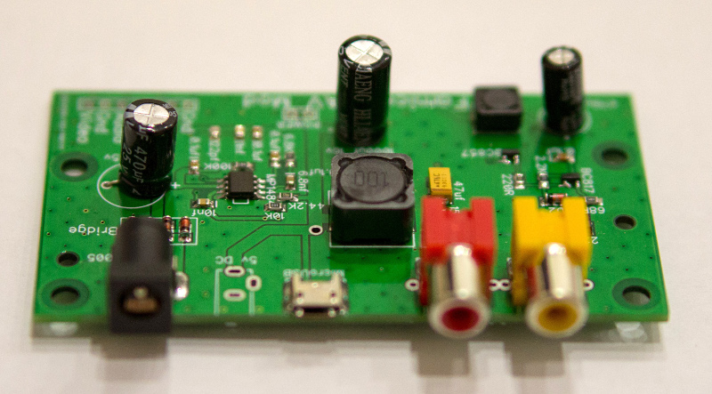
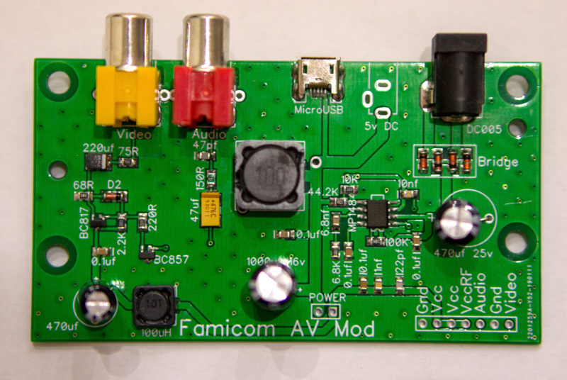
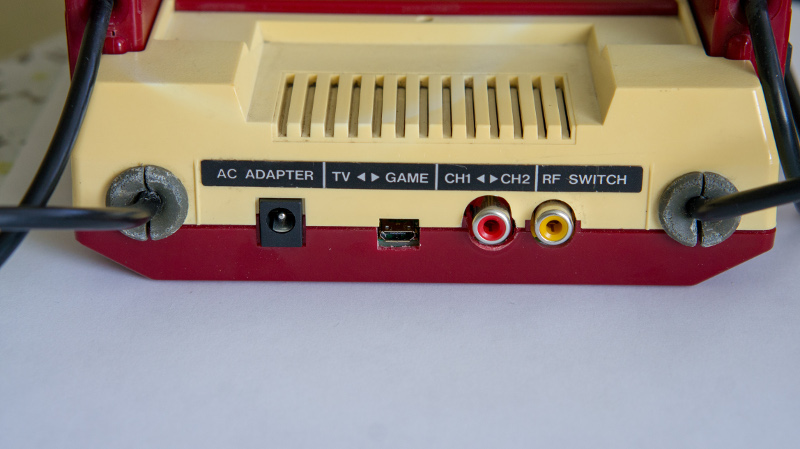
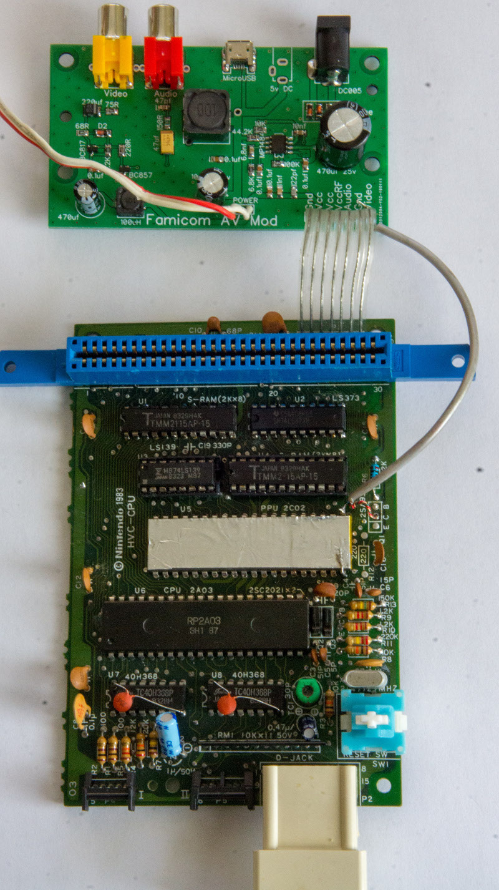
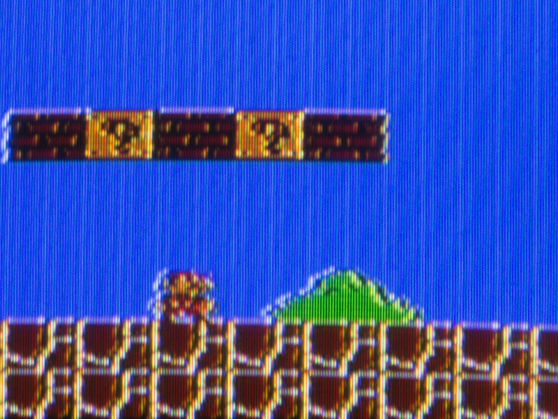
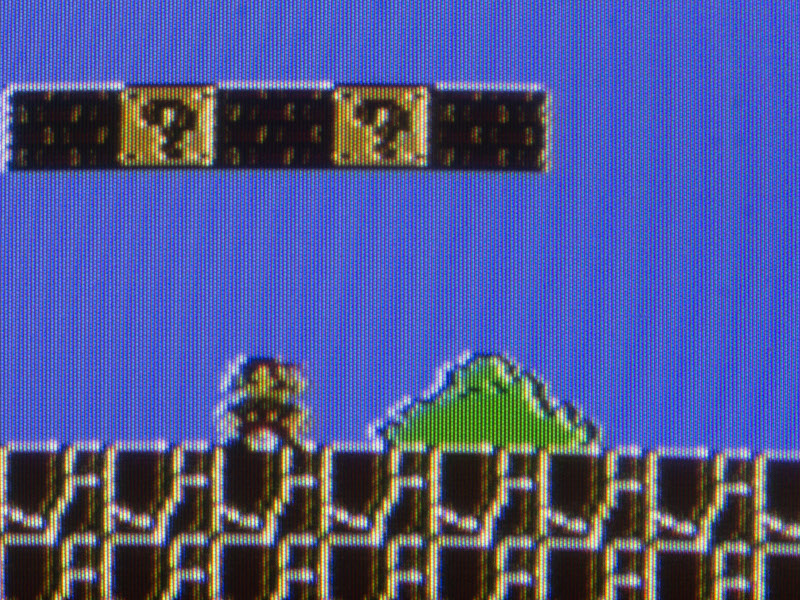

Famicom AV-Mod


Плата AV-Mod для замены оригинальной платы питания и Аудио/Видео вывода для Famicom.
Также возможно установить на клоны Денди у которых плата плата нецельная.
Диодный мост позволяет подключать блок питания любой полярности. А импульсный преобразователь напряжения MP1484 позволяет подключать блок питания до 18v.
Также на плате есть micro USB вход питания.
Рекомендуется использовать блок питания micro USB не менее 5v 1.5A.

Для практически полного устранения полос необходимо поднять ногу PPU и экранированным проводом соединить со входом платы AV-Mod. Экранировать PPU не обязательно, хотя можно обернуть медной фольгой.

Картинка с консоли без AV-Mod:

Картинка с Famicom с AV-Mod:

Цена платки 150грн.
Связатся со мной можно по Viber, Telegram, Телефон +380992028599 Кузнецов Евгений
Отправка: новая почта/укрпочта. Оплата: наложка/приват